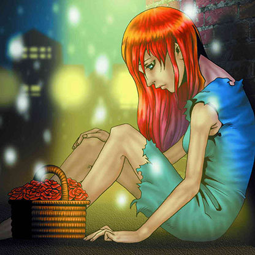

The Unhappy Maiden

Description: "Whenever damage is inflicted to LP in battle, the damage amount is reduced to 0."
STATS
ATK: 0
DEF: 100DECK COST
Deck Cost per Card: 6EFFECT NOT IMPLEMENTED
Fusion List (10 Possible Fusions)
- The Unhappy Maiden + Ancient Tree of Enlightenment = Queen of Autumn Leaves
- The Unhappy Maiden + Dancing Elf = Mystical Elf
- The Unhappy Maiden + Dark Plant = Queen of Autumn Leaves
- The Unhappy Maiden + Goddess of Whim = Dark Witch
- The Unhappy Maiden + Griggle = Queen of Autumn Leaves
- The Unhappy Maiden + Hourglass of Courage = Dark Witch
- The Unhappy Maiden + Laughing Flower = Queen of Autumn Leaves
- The Unhappy Maiden + Lunar Queen Elzaim = Dark Witch
- The Unhappy Maiden + Tiger Axe = Nekogal #2
- The Unhappy Maiden + Yamatano Dragon Scroll = Blackland Fire Dragon